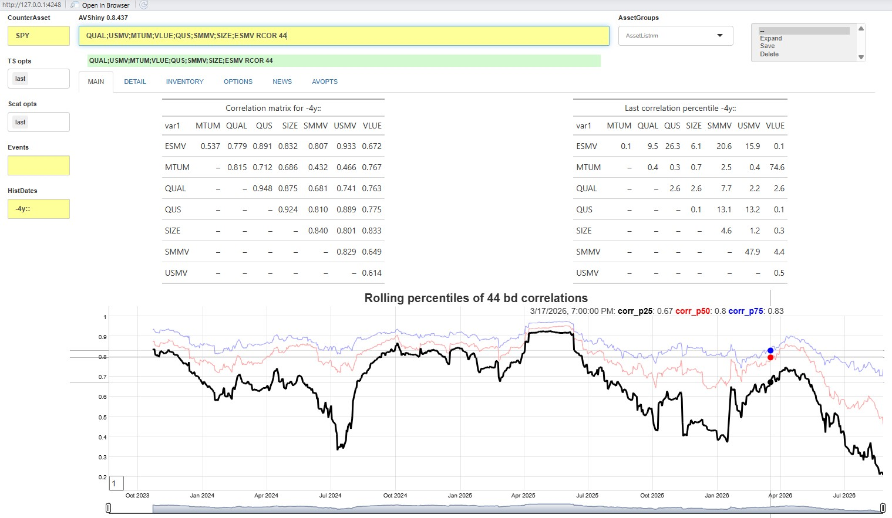

ShinyApp_4_New_Functionality
Source:vignettes/ShinyApp_4_New_Functionality.Rmd
ShinyApp_4_New_Functionality.RmdIntroduction: Innovate or die
The commands embedded with this app are just basic building blocks and nowhere near sufficient to do all the analyses that may be required. The app is designed to be extended by allowing users to add new functions outside theAlphavantagepf package.
New functions will take (as inputs) the command (and options) to be executed and a named list with the current values of every design element in the app, augmented with a few more parameters to simplify function definitions. The function can call upon a number of “interface” functions to both get data from the app’s internal store, and to interface with the feedback elements of the app. As output, the function should return a (possibly named) list of tables (gt objects), dygraphs, or ggplots. The element names can correspond to the output names defined in the next section, or (if the list is unnamed) will be filled in order.
The examples in this section assume some familiarity with
data.table(). At some point, I’ll rewrite them in simpler
formats.
App layout: Outputs
Outputs in the main page are shown in the following order:
| TAB | Name | Order Shown | Class | Type |
|---|---|---|---|---|
| MAIN | MSG | 1 | character | text |
| MAIN | GT1 | 2 | gt_tbl | gt |
| MAIN | GT2 | 3 | gt_tbl | gt |
| MAIN | GT3L | 4 (L) | gt_tbl | gt |
| MAIN | GT3R | 5 (R) | gt_tbl | gt |
| MAIN | TS1 | 6 | dygraphs | dygraphs |
| MAIN | TS2 | 7 | dygraphs | dygraphs |
| MAIN | SCAT1 | 8 | ggplot2::ggplot | ggplots |
| MAIN | SCAT2 | 9 | ggplot2::ggplot | ggplots |
| DETAILS | DGT1 | 1 | gt_tbl | gt |
| DETAILS | DGT2 | 2 | gt_tbl | gt |
| DETAILS | DSCAT1 | 3 | ggplot2::ggplot | ggplots |
| DETAILS | DSCAT2 | 4 | ggplot2::ggplot | ggplots |
So for example, a named list of the form
will show mtcars as a table followed by a scatterplot on
the MAIN tab,
and a truncated table first in the DETAILS
tab.
App layout: inputs
The values of input design elements are all passed into a user
function as (de-reacted) named list. The app command
AV.INPUTS will produce a full table of the current values
of design elements. The most important items for a user function are
listed below:
| inputId | Type | Description | Example |
|---|---|---|---|
assetline |
character | Asset string | QQQ;DIA |
todo |
character | Full Command to Run | QQQ;DIA GPD -6m:: |
todofunc |
character | Command base | GPD |
todoargs |
character | Command arguments | -6m:: |
istr1 |
character | Full input line | QQQ;DIA GPD -6m:: |
inTabset |
character | Currently selected Tab | MAIN |
istr2 |
character | Counterasset | SPY |
dtstr_hist |
character | Analysis date string | -2y:: |
cachedir |
character | Directory with cached data | c:/t/avsh |
ts_volparams |
character | Volatility parameters | gk.yz;20;252 |
sigpct |
character | Highlight p-value | 0.025 |
gropts |
character | Time Series Graphing options | last |
scatopts |
character | Scatter plot options | last |
ts_events |
character | Time Series Events | tp,5 |
All other items in the named list can be found either by inspection
when the function is run within the shiny app, or by inspecting the
source code of the ui function generator in the file
app.R.
Writing and registering new functions and commands
New functions that provide analytics must have the following properties:
- Take two arguments:
todowith the command, andrv(For Reactive values) - Return a list of
gt()tables,dygraphsorggplots. - Be accessable from
.GlobalEnv - Be registered with the av_add_analytic()
function, which requires
- A
runcodewhich is the command that will be typed (e.g.CORfor correlation analysis) - The
func_nameof the function to run - An optional help string to be shown when
AV.His run - The
focustab to be shown upon completion of the function.
- A
Functions can also access the data contained in the app and interact with the user using a few helper functions. The data can also be accessed directly if you’re familiar with its format and location.
Helper Functions: Data
The most important thing a user needs is access to the data held by
the app. A list of the internal tables which can be accessed via the av_load_shinydata()
function (and listed by running from the console
dump_state("data")) is
| Name | Description |
|---|---|
| assetgroups | Table of asset groups |
| avsh_funcs | Current list of functions |
| cmdhist | Rolling history of commands issued |
| earn | Earnings Data |
| earnest | Earnings Forecasts |
| listings | Equity Listings obtained from
av_get_pf("","LISTING_STATUS")
|
| pxd | Price Time Series Data |
| pxinv | Data inventory |
| renderset | Table of output elements |
| tickerlist | List of indices and crypto pairs availble form AlphaVantage |
For example, to get price data for a ticker string, use
> tickers_to_get=strsplit("IBM;QQQ;SPY",";")[[1]]
> pxdata <- av_load_shinydata("pxd")[data.table(symbol=tickers_to_get),on=.(symbol)]
> pxdata
symbol timestamp open high low close adjusted_close volume dividend_amount split_coefficient ts origclose
<char> <IDat> <num> <num> <num> <num> <num> <num> <num> <num> <POSc> <num>
IBM 1999-11-01 98.5 98.8 96.4 96.8 47.1 9551800 0 1 2026-08-03 15:10:30 NA
IBM 1999-11-02 96.8 96.8 93.7 94.8 46.2 11105400 0 1 2026-08-03 15:10:30 NA
IBM 1999-11-03 95.9 95.9 93.5 94.4 46.0 10369100 0 1 2026-08-03 15:10:30 NA
IBM 1999-11-04 94.4 94.4 90.0 91.6 44.6 16697600 0 1 2026-08-03 15:10:30 NA
IBM 1999-11-05 92.8 92.9 90.2 90.2 44.0 13737600 0 1 2026-08-03 15:10:30 NA
--- --- --- --- --- --- --- --- --- --- --- ---
SPY 2026-07-27 744.9 745.5 735.9 739.1 739.1 41461194 0 1 2026-08-01 19:38:06 NA
SPY 2026-07-28 739.2 742.8 736.0 740.9 740.9 47322247 0 1 2026-08-01 19:38:06 NA
SPY 2026-07-29 740.0 742.7 729.1 729.5 729.5 70697215 0 1 2026-08-01 19:38:06 NA
SPY 2026-07-30 736.0 742.5 734.6 741.7 741.7 66811268 0 1 2026-08-01 19:38:06 NA
SPY 2026-07-31 744.7 748.9 737.7 747.0 747.0 62445899 0 1 2026-08-01 19:38:06 NAOutside of the function, use av_load_shinydata() without arguments to load the data into the app without actually running it.
The sister package FinanceGraphs also contains some very helpful functions consistent with the design conventions of this app:
| Function | Description |
|---|---|
| narrowbydtstr() | Filter a data.table() using a date
string |
| extenddtstr() | Expand a datestring into a new one |
| gendtstr() | Expand a datestring into a list of dates |
These functions facilitate transformation of succinct date strings
such as "-3y::" to actual dates, possibly with offsets,
e.g.
and truncating data.tables() with date fields to those
dates.
Helper Functions: UI Interaction
Three other functions may be used to interact with the user via the Shiny app:
| Function | Critical Arguments | Description |
|---|---|---|
| avsh_quick_message | where,this_message="" |
Give user feedback below a design element |
| avsh_clipboard | data table |
Copy data to the clipboard |
| avsh_set_tabtitle | newtext="",tabnm="detail" |
Set a Tab title and optionally change focus to it |
Registering a new function
The minimal information necessary to integrate your function into the app is shown below:
| Name | Required | Description |
|---|---|---|
runcode |
Y | What user need to type to run the function |
func_name |
Y | Name of function |
helpstr |
N | Help String to add to AV.H
|
focus |
N | Tab to switch focus to |
and is added to the app’s internal cache using av_add_analytic()
Example: Rolling Correlations
Suppose we wish to add an analytic which (given a set of assets) does the following with the assets entered with the command.
- Produces a time series graph (
dygraph()) with the an average rolling correlation, as well as 25th and 75th percentiles - Produces a table (
gt()) with a correlation matrix of returns over the entire history. - Produces a table (
gt()) with a matrix of percentiles of the last rolling correlation over the entire history1.
Writing a function
Putting the above information together we can create the following function
my_corr <- function(todo,rv) {
# Get Data
tickers_to_get=strsplit(rv$assetline,";")[[1]]
roll_window <- fcoalesce(as.numeric(rv$todoargs),22) # default to 22 day rolling correlation
if(length(tickers_to_get)<3) {
avsh_quick_message("Need at least 3 tickers")
return() }
allpx <- av_load_shinydata("pxd")[data.table(symbol=tickers_to_get),on=.(symbol)]
allpx <- allpx[,rtn:=c(NA_real_,diff(log(adjusted_close),1)), by=.(symbol)]
newdtstr <- FinanceGraphs::extenddtstr(rv$dtstr_hist,begchg=-ceiling(31/22*roll_window))
allpx <- allpx [,.(symbol,timestamp,rtn)] |> FinanceGraphs::narrowbydtstr(newdtstr)
# get Data
pairs <- CJ(var1=tickers_to_get,var2=tickers_to_get)[var1<var2,]
corDT1<- allpx[,.(timestamp, var1=symbol, rtn1=rtn)][pairs,on=.(var1),allow.cartesian=TRUE]
corDT<- allpx[,.(timestamp, var2=symbol, rtn2=rtn)][corDT1,on=.(var2,timestamp),allow.cartesian=TRUE]
# Rolling correlation
rollcor_DT <- corDT[,rcorr:=frollapply(.SD,roll_window,\(x) cor(x$rtn1,x$rtn2),by.column=FALSE), by=.(var1,var2)]
cornames <- c("corr_p25","corr_p50","corr_p75")
rollcor_toplot <- rollcor_DT[, (cornames):=as.list(quantile(.SD$rcorr,probs=c(0.25,0.5,0.75),na.rm=TRUE)), by=.(timestamp)][
,.SD, .SDcols=c("timestamp",cornames)]
rollcorr_dyg <- fgts_dygraph(rollcor_toplot,title=paste0("Rolling percentiles of ",roll_window," bd correlations"),
roller=1,events=rv$ts_events)
# Overall correlations for period
corDT <- corDT |> FinanceGraphs::narrowbydtstr(rv$dtstr_hist)
allcorr <- corDT[,.(allcorr=cor(rtn1,rtn2,use="pairwise.complete.obs")),by=.(var1,var2)]
allcorr_gt <- dcast(allcorr,var1 ~ var2,value.var="allcorr") |> gt() |>
tab_header(title=paste0("Correlation matrix for ",rv$dtstr_hist)) |> sub_missing(missing_text="--")
# Last Percentiles
corrpct <- rollcor_DT[,.(lastpctile=100*last(frank(rcorr,na.last=NA))/.N), by=.(var1,var2)]
pctlast_gt <- dcast(corrpct,var1 ~ var2,value.var="lastpctile") |> gt() |>
tab_header(title=paste0("Last correlation percentile ",rv$dtstr_hist)) |>
fmt_number(decimals=1) |> sub_missing(missing_text="--")
# Return list
return(list("GT3L"=allcorr_gt,"TS1"=rollcorr_dyg,"GT3R"=pctlast_gt))
}Note a few items about this code:
The app uses the user function av_load_shinydata() to get data from the internal data store. In this case, we need access to
pxdfrom the table above.The app uses two helper functions from FinanceGraphs.
extenddtstr()backs up the date string so that we can get a valid rolling correlation from the start of the analysis period (given as a string byrv$dttr_hist).narrowbydtstr()filters the data to the time periods desired.To control where the output goes, you can return a named list of outputs consistent with the above table. In this case, we return to matrices side by side by naming the outputs
"GT3L"and"GT3R". If named, the returned items don’t need to be in any order. If not named, the items are placed top to bottom.The function is a
data.table()-centric, but does not need to be. Yidyverse idioms can be used, but are likely to be slower.
Registering and running the function.
We need to define how users will call this function, so a reasonable choice is “RCOR”. To add that function to the stable of those available, just run
av_add_analytic("RCOR","my_corr",helpstr="Rolling Correlations")Doing so will save the definition in the disk cache, so we just need
to rerun av_runShiny() prior to running the
RCOR function.
Once av_runShiny() is running with the registered
function, we need to ensure its definition is in the Global Environment
(.GlobalEnv()), and run it on a larger set of assets. For
example, to analyze a series of Factor ETFs over the past two years
using 2 month rolling correlations, we would type in the command line
QUAL;USMV;MTUM;VLUE;QUS;SMMV;SIZE;ESMV RCOR 44 to get `
